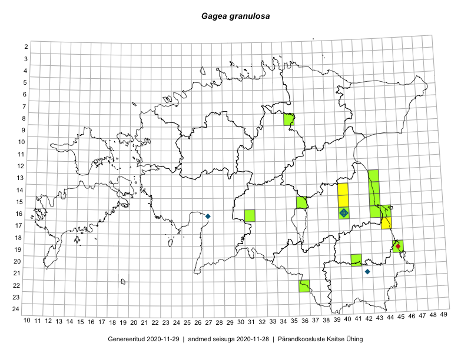

Gagea granulosa
Uuendatud: 2016-12-02
Kaardile koondatud taksonid: Gagea granulosa Turcz.

Kaart põhineb 20 vaatlusel. Taksonit on leitud 10 ruudust.
Viited andmebaasikirjetele
- Toomas Kukk, Eerik Leibak: 2015-05-03: 16-43: ala
- Eerik Leibak, Toomas Kukk: 2015-05-03: 16-44: ala
- Eerik Leibak, Toomas Kukk: 2015-05-03: 17-44: ala
- Toomas Kukk, Eerik Leibak: 2015-05-03: 16-44: GPS punkt
- Toomas Kukk, Eerik Leibak: 2015-05-03: 17-44: GPS punkt
- Toivo Sepp, Eerik Leibak: 2015-05-12: 08-35: ala
- Toivo Sepp, Eerik Leibak: 2015-05-12: 08-35: GPS punkt
- Karin Kikas, Elle Rajandu: 2015-04-30: 16-40: GPS punkt
- Elle Rajandu: 2015-04-25: 16-40: GPS punkt
- Elle Rajandu: 2015-04-25: 16-40: GPS punkt
- Karin Kikas, Elle Rajandu: 2015-04-21: 16-40: ala
- Elle Rajandu: 2015-04-27: 16-40: GPS punkt
- Elle Rajandu: 2015-04-27: 16-40: GPS punkt
- Elle Rajandu: 2015-04-15: 15-40: ala
- Elle Rajandu: 2015-04-30: 15-40: GPS punkt
- Karin Kikas, Elle Rajandu: 2015-04-20: 14-40: ala
- Karin Kikas, Elle Rajandu: 2015-04-28: 14-40: GPS punkt
- Toomas Kukk, Eerik Leibak: 2016-04-25: 20-41: ala
- Toomas Kukk, Eerik Leibak: 2016-04-27: 22-36: ala
- Rein Kalamees: 2016-05-07: 05-31: ala